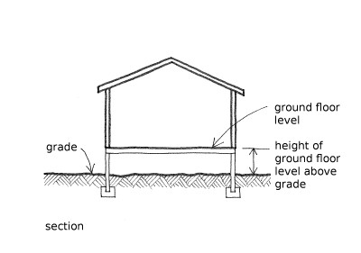

Height of ground floor level above grade [HF]
Grade is the level of the ground at the perimeter of the building. This attribute records the height of the ground floor level of the building above grade.
The height of ground floor level above grade can be recorded as an exact number, or as a range, or as an approximate number. It can also be recorded as unknown.
Grade is usually somewhat lower than the ground floor level, and this information is relevant for flood hazard and foundation seismic performance.

An example of how the height of the ground floor level above grade is measured on a flat site

Height of ground floor level above grade in this dwelling in Cambodia is at least 2 meters (C. Scawthorn)